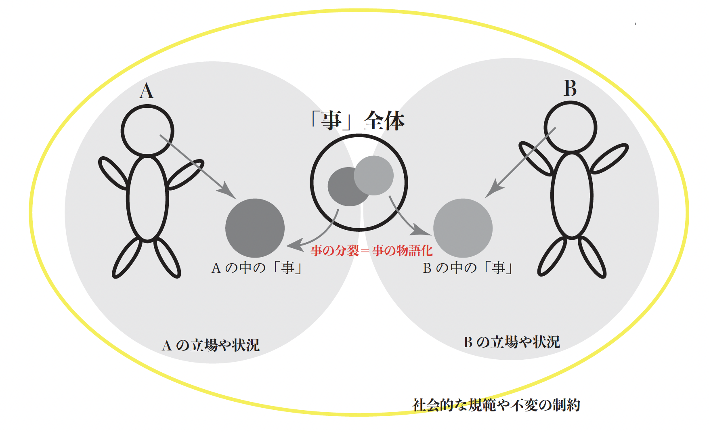

Vision / 視線の非対称性

私たちは、なぜ“すれ違う” のだろうか。
同じ事象を見つめる時、その複雑性に包まれた「事」を各人が異なる方向や強さでフォーカスする。この“単純化” のプロセスは、しばしば表裏一体で善悪がつけられない「事」から、特定の側面を切り取り二項対立を生成する。
フォーカスによって物語化された「それ」は、時に他者を傷つける。誰も「事」の全体を見通すことができない以上、私が理解する「それ」とは、世界そのものではなく、常に「私の中にあるそれ」である。
主観性の強い「音」を媒介に他者のまなざしを追体験させるプロセスを通じ、物語化された認知の非対称性を超えた新たな関係性の創出を目指す。